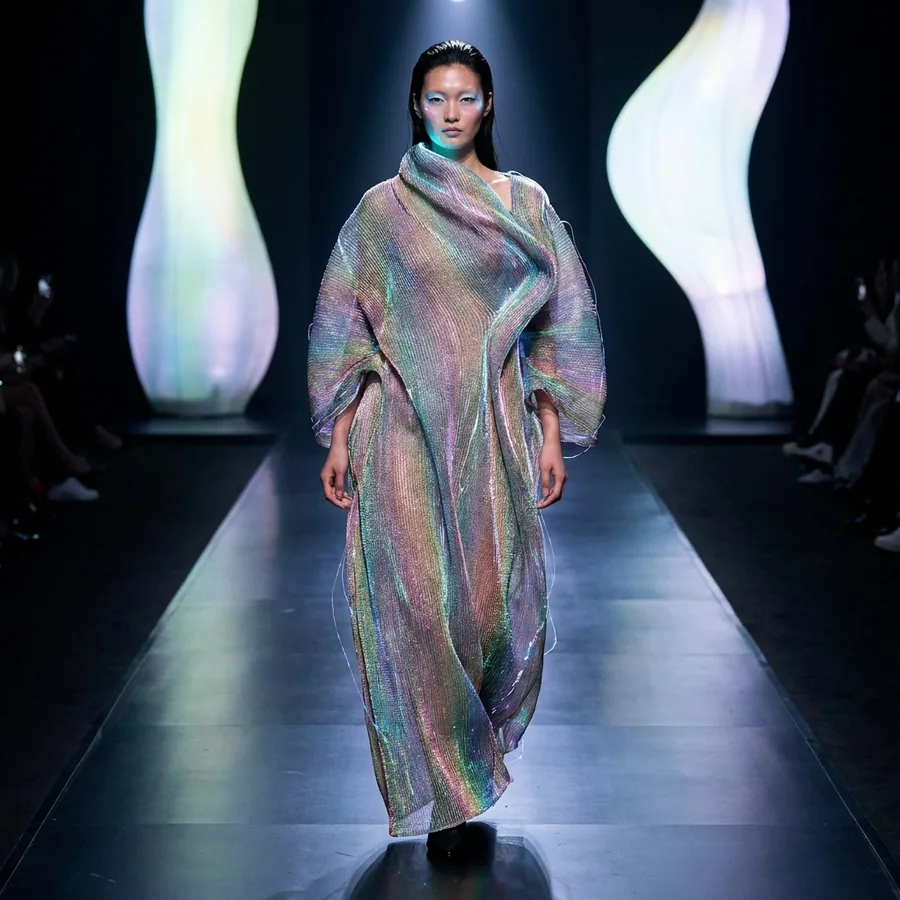
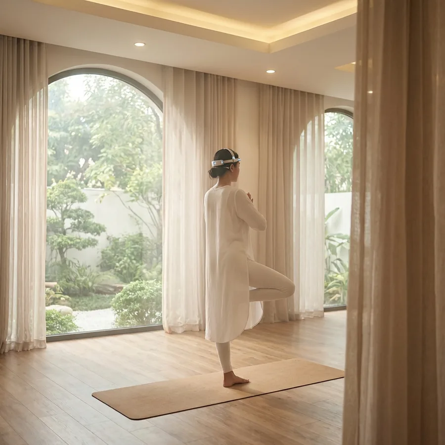
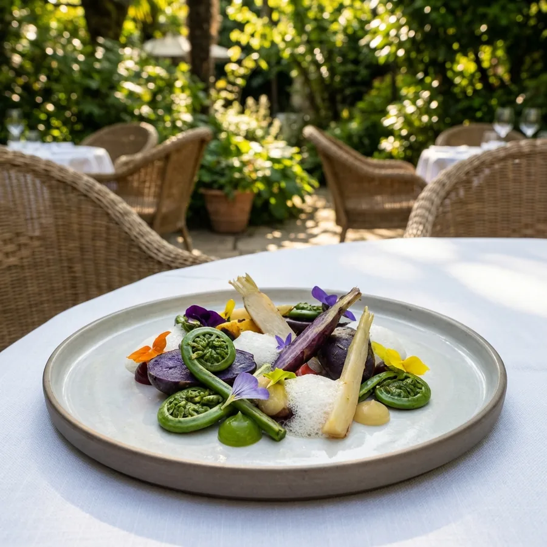
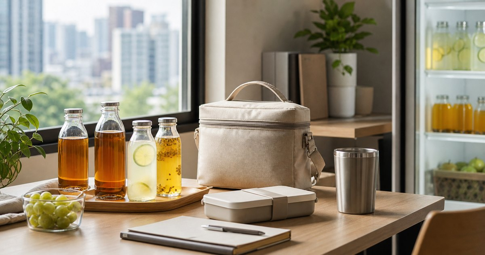
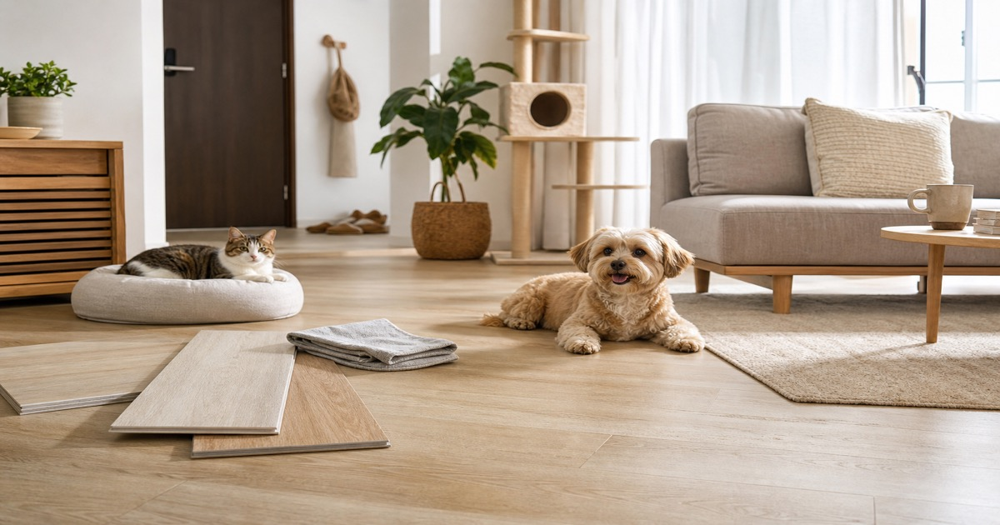
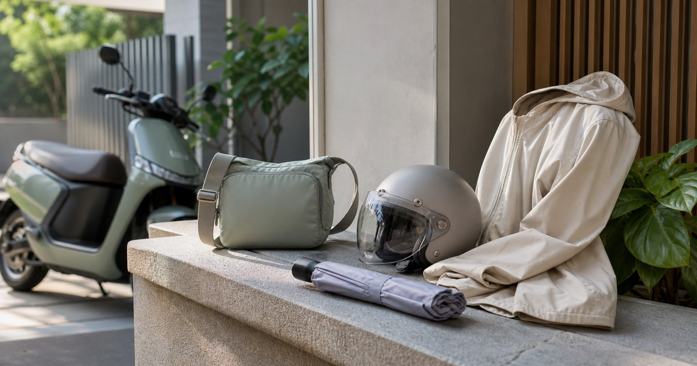
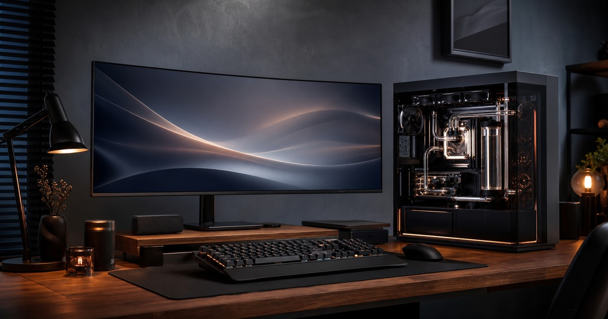
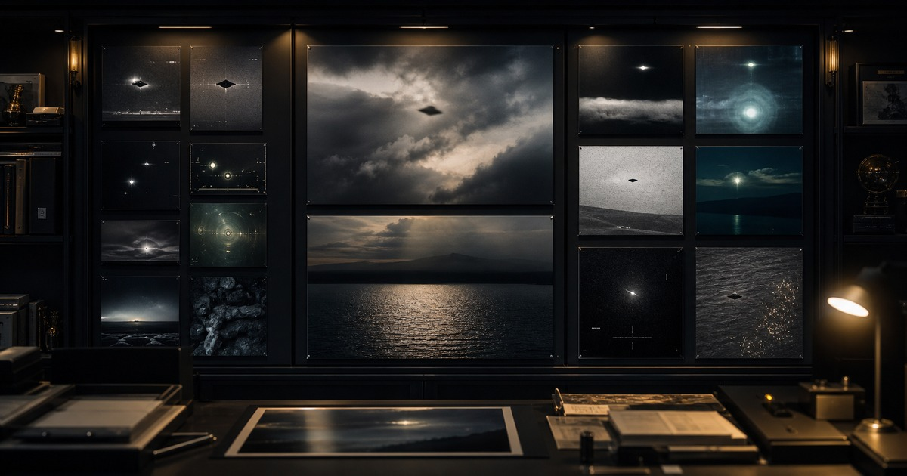

2026 春夏熟齡生活企劃
睡眠熱感、旅行衣櫥、獨旅安全、低壓社交與 AI 工作重整，整理成一個春夏決策入口。
進入企劃 →深入探索六大時尚與生活主題

深入解析全球四大時裝週及高級訂製時裝的最新動向，透過第一手報導、設計師專訪與趨勢分析，為讀者精準解讀每一季的時尚風向與背後故事。
閱讀更多 →獨家專訪頂尖設計師、創意總監與時尚偶像，揭示他們的創作靈感、品牌哲學與職涯故事，探索時尚產業的幕後精神。
閱讀更多 →重新定義日常穿搭的質感美學，從膠囊衣櫥到混合辦公風格，教您如何在舒適與品味之間取得完美平衡。
閱讀更多 →
整理熟齡女性的睡眠、熱感、更年期、肌力、步行與旅行疲勞恢復，把健康習慣放回日常節奏裡。
閱讀更多 →連結時尚與自然探險的無限可能，介紹戶外機能裝備、風格化的露營與登山穿搭，體驗充滿冒險精神的自然之美。
閱讀更多 →
精選涵蓋藝術、美食、旅行、居家設計等深度內容，將時尚眼光擴展至生活每一個細節，展現精英生活的完整風貌。
閱讀更多 →從季節生活到人生轉折，先進入最能承接站內內容的兩個核心入口。
從站內最新上線的內容開始閱讀，快速掌握這一季最值得關注的主題與觀點。

從開封速度、甜度到通勤攜帶，整理 Zymoïde 適合哪些外食族先看。
閱讀全文 →
酷狗地板怎麼看更實際？從租屋可逆施工、毛孩止滑、台灣潮濕清潔到退租風險，整理寵物家庭更容易落地的地板改造順序。
閱讀全文 →
從遮蔽、透氣到收納，整理 UV100 適合哪些機車通勤者先看。
閱讀全文 →
先把食慾、飲水、清潔與外出反應記成兩週觀察表，再回 GenePet.tw 比較用品。
閱讀全文 →
從水冷電腦、電競主機到未來升級空間，整理凱銓科技適合哪些人先看。
閱讀全文 →
集中觀看 AARO / DVIDS 已公開 UAP/UFO 官方影像縮圖與案例連結：PR-018、GIMBAL、GOFAST、FLIR、已解析氣球與鳥群案例。
閱讀全文 →Elite Fashion 是一個專注於引領時尚潮流與精英生活方式的專業媒體平台。我們致力於為讀者帶來最前沿的時尚資訊、最深入的設計師訪談，以及最實用的生活品味指南。
從全球時裝週的秀場趨勢到日常生活的休閒穿搭，從身心靈的健康追求到戶外探險的自然體驗，我們用專業的眼光和獨特的視角，為您呈現一個完整的精英生活藍圖。
先用幾個問題找到最適合自己的閱讀入口。
可以先從首頁的本季主題策展進入，依照當下最關心的情境選擇時尚趨勢、健康恢復、旅行移動、工作重整或人生節奏。
兩種方式都適合。分類頁能快速找到主題方向，單篇文章則會整理選購順序、常見取捨與台灣日常情境。
通勤穿搭、健康恢復、戶外生活與生活品味分類最適合從具體情境切入，例如會議、旅行、居家整理、睡眠與日常恢復。
不可以。本站提供編輯整理與生活決策參考；涉及醫療、營養、法律、保險或投資時，仍應諮詢合格專業人員。